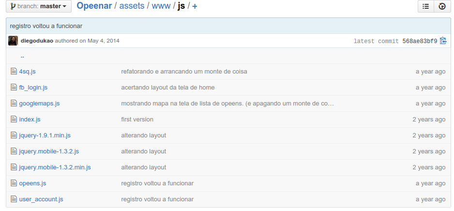
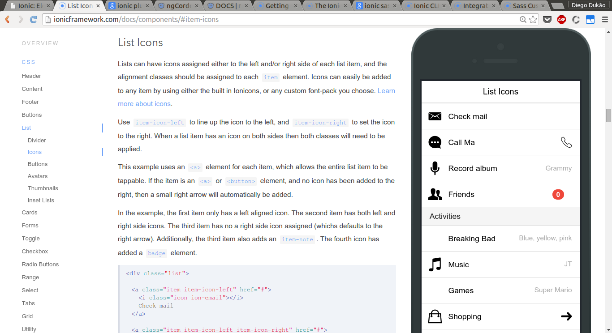

TDC 2015
Ionic: Elevando o nível do seu aplicativo multiplataforma
Diego (Dukão) Moreira Guimarães
São Paulo/SP
24 de Julho de 2015
# ?
- ## Quem já programa pra celular?
- ## Nativo?
- ## Multiplaforma?
- ## PhoneGap?
## Aplicativo multiplataforma presta?
## Tenho algumas ideias de aplicativos para celular.
## Alternativas (que eu já testei)
# Titanium
- ## JavaScript
- ## Compila pra código nativo
- ## Mantém o ~look and feel~ de cada plataforma
Titanium
- Você fica dependente da Appcelerator
- Fica sempre atrás das novidades da SDK nativa
# Kivy
- ## Python + OpenGL
- ## Mesma aparência em todas as plataformas
- ## Bom para apps muitos específicos
## Ionic / PhoneGap (Cordova)
- ## Entre nativo e webaapp
## Web App?
- ### Uma página web otimizada para tablet e celulares
## Vantagens (Web App)
- ### Você não precisa aprender a programar para aquele SO específico
- ### HTML + CSS + Javascript
- ### Pode ser apenas uma versão mobile do seu site que já está no ar
## Desvantagens (Web App)
- ### Acesso limitado aos recursos do dispositivo
- ### Mais lenta que apps nativas
## Desvantagem: acesso limitado aos recursos do dispositivo
- ### O que você não consegue acessar?
- #### Câmera, acelerômetro, contatos, etc.
## O você consegue acessar com uma web view?
- ### Orientação, geolocalização, mídia, etc.
Desvantagem: acesso limitado aos recursos do dispositivo
O que você não consegue acessar?
- Câmera, acelerômetro, contatos, etc.
Quantos aplicativos você conhece que usa esses recursos?
75,23%
- Das estatísticas são inventadas
"Ah, mas o meu app precisa disso tudo"
Ionic!
- Web View + APIs para acesso aos recursos do celular
- HTML5, CSS e JavaScript (AngularJS)
- Você vai estar na moda ;)
PhoneGap é ~freestyle~ demais!
A falta de um framework JavaScript...

## Começando com Ionic
```shell
$ npm install -g cordova ionic
$ ionic start myApp tabs
```
```shell
$ ionic platform add android
$ ionic build android
$ ionic emulate android
$ ionic run android
```
imagem do app no emulador
Muitos componentes de interface prontos

A interface toda pode ser customizada com Sass
ngCordova
Plugins do Cordova e do PhoneGap prontos para serem usados com AngularJS
## ngCordova
```shell
$ cordova plugin add https://github.com/cordova-sms/cordova-sms-plugin.git
```
```javascript
module.controller('ThisCtrl', function($cordovaSms) {
document.addEventListener("deviceready", function () {
$cordovaSms
.send('phonenumber', 'SMS content', options)
.then(function() {
// Rolou! SMS enviado
}, function(error) {
// Não rolou.
});
});
});
```
## Push Notifications
```shell
$ cordova plugin add https://github.com/phonegap-build/PushPlugin.git
```
Então devo mesmo usar Ionic?
- Você tem tempo e dinheiro limitados?
- Pretende atingir mais de uma plataforma com o seu aplicativo?
- Performance não é o mais importante?
- Já programa para web?
Então devo mesmo usar Ionic?
- Você tem tempo e dinheiro limitados? Sim
- Pretende atingir mais de uma plataforma com o seu aplicativo? Sim
- Performance não é o mais importante? Sim
- Já programa para web? Sim
Sim!
Já programa para web? Não? =/
- Já sabe nativo?
- Se não souber, vale apena começar com Ionic! Vai ser mais rápido!
- Se o app não der certo, você pode virar Front-end Developer ;)
65,32%
- Das pessoas só acreditam em estatísticas com duas casas decimais.